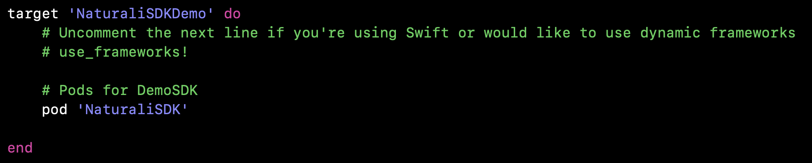
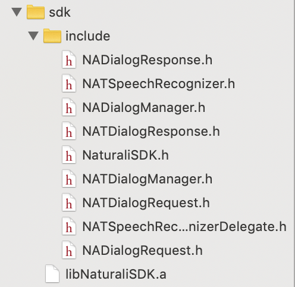
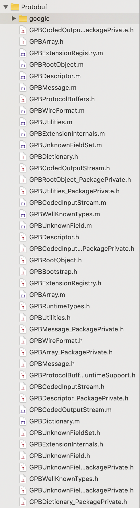
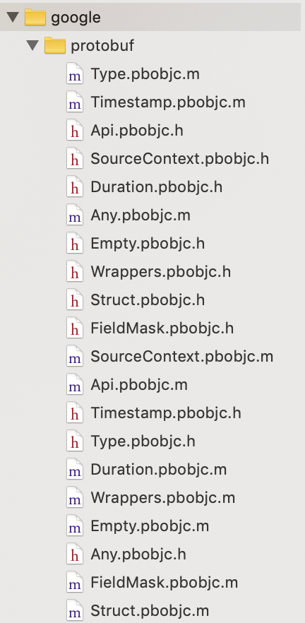
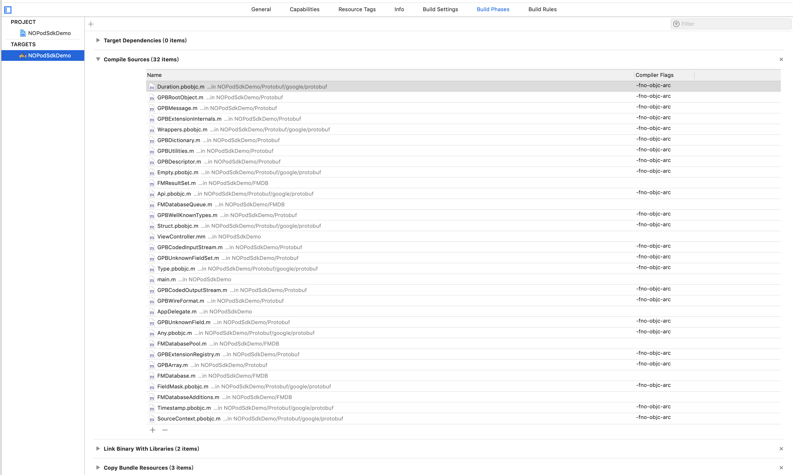
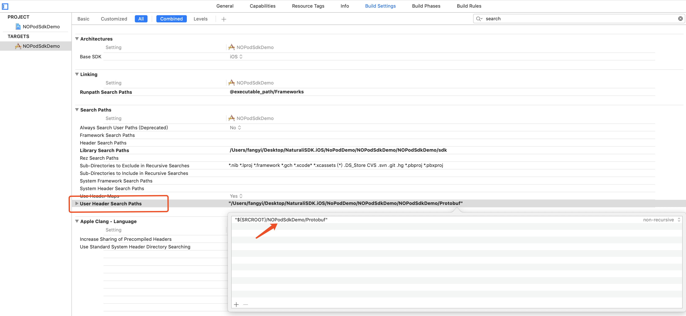
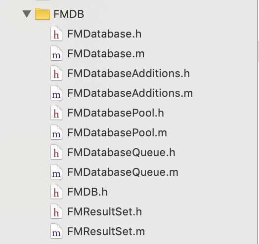

KerfuSDK集成方式
KerfuSDK可通过CocoaPods和工程引入两种方式集成，若集成方工程的使用了主流的Cocoapods管理，那么恭喜你，集成过程会方便很多，下面分别介绍两种集成方式。
一、CocoaPods集成
在Podfile文件中增加KerfuSDK的pod
pod 'KerfuSDK'
例如： 
版本号不指定可随时更新最新版本，也可指定某一稳定的版本号，然后工程目录进行pod install或者pod update进行工程workspace的更新后即可在项目中使用KerfuSDK。
二、在project中直接引入SDK
1.在KerfuSDK下载页面(内含demo代码)选择最新发布的SDK版本并下载解压，将解压后的文件夹拖入工程，文件布局如下图。 
2.引入google的Protobuf，若您的工程已引入Protobuf，请跳过本步骤。 前往Protobuf，选择最新版本的objectivec包下载并解压，将解压后的文件夹拖入工程，文件布局如下图， 
google目录展开后如下图， 
Protobuf为非ARC模式，所以要将本次引入的所有*.m文件的编译标识设置为MRC模式，具体步骤为前往工程target下的Build Phases标签下，展开Compile Sources项，并多选所有的Protobuf库的*.m文件，将其Compiler Flags设置为-fno-objc-arc，如图所示，

在对应target的Build Settings中找到User Header Search Path项，并添加您引入的Protobuf文件夹所在的路径，如图。  3.引入FMDB，若您的工程已引入FMDB，请跳过本步骤。 前往FMDB,选择最新版本的压缩包下载并解压，将解压后的文件夹拖入工程，文件布局如下图， 
4.就此protject中直接引入SDK的工作结束，可以项目代码中使用KerfuSDK了。
KerfuSDK初始化
使用本框架需要在Naturali平台注册并获取集成app的appId,appKey和appSecret。
引入KerfuSDK.h头文件
SDK初始化代码如下：
//注册sdk
[KerfuSDK registerAppId:@"yourAppId"
appKey:@"yourAppKey"
appSecret:@"yourAppSecret"];
在集成方账号体系中的用户登录后，需要将该用户id设置为与本SDK服务器对话的用户id：
//设置userId,发送消息的用户id
[KerfuSDK setUserId:@"yourUserId"];
SDK需要访问麦克风权限，若您未设置麦克风权限，请在您工程的info.plist文件中增加如下图所示项：

另:若您下编译过程中遇到类似下图的编译错误：
 静态库中采用ObjectC++实现，因此需要您保证您工程中至少有一个.mm后缀的源文件(您可以将任意一个.m后缀的文件改名为.mm)，或者在工程属性中指定编译方式，即将Xcode的Project -> Edit Active Target -> Build -> GCC4.2 - Language -> Compile Sources As设置为"Objective-C++"。
静态库中采用ObjectC++实现，因此需要您保证您工程中至少有一个.mm后缀的源文件(您可以将任意一个.m后缀的文件改名为.mm)，或者在工程属性中指定编译方式，即将Xcode的Project -> Edit Active Target -> Build -> GCC4.2 - Language -> Compile Sources As设置为"Objective-C++"。
至此，您可以愉快地使用KerfuSDK了。
KerfuSDK接口文档
SDK初始化
引用头文件
#import <KerfuSDK.h>
注册SDK
[KerfuSDK registerAppId:@"yourAppId"
appKey:@"yourAppKey"
appSecret:@"yourAppSecret"];
设置默认的用户id
//设置userId,发送消息的用户id
[KerfuSDK setUserId:@"myUserId"];
添加动态实体
KFDynamicEntityValue *value1 = [KFDynamicEntityValue new];
value1.keyword = @"keyword1";
value1.aliases = @[@"alias1",@"alias2"];
KFDynamicEntityValue *value2 = [KFDynamicEntityValue new];
value2.keyword = @"keyword2";
value2.aliases = @[@"alias3",@"alias4"];
KFDynamicEntityValue *value3 = [KFDynamicEntityValue new];
value3.keyword = @"keyword3";
value2.aliases = @[@"alias5",@"alias4"];
KFDynamicEntity *entity = [KFDynamicEntity new];
entity.typeName = @"yourTypeName";
entity.values = @[value1,value2,value3];
[NaturaliSDK addDynamicEntities:@[entity]];
语音识别
创建语音识别器并设置代理对象，回调将通过代理对象返回。
self.recognizer = [[KFSpeechRecognizer alloc] initWithDelegate:self];
开始录音
[self.recognizer startRecording];
或者直接开始语音使用对话流
[self.recognizer startDialogRecordingWithAgentId:self.agentIdLabel.text];
结束录音
[self.recognizer stopRecording];
中途取消录音
[self.recognizer cancelRecording];
实现语音识别的回调方法
- (void)onCompleted:(NSError *)error {
//语音录制结束，若无异常，则error为nil
NSLog(@"speech recognizer complete with error : %@",error);
}
- (void)onResult:(NSString *)result isDone:(BOOL)isDone voiceUrl:(NSString *)voiceUrl {
//实时监听语音录制的识别结果，当语音录制结束时，isDone为true
self.queryInput.text = result;
}
其他可选监听回调
optional
/*!
* 开始录音
* 当调用了`startRecording`函数之后，如果没有发生错误则会回调此函数。
*/
- (void)onBeginOfSpeech;
/*!
* 停止录音
* 当调用了`stopRecording`函数之后，会回调此函数
*/
- (void)onEndOfSpeech;
/*!
* 取消识别回调
* 当调用了`cancel`函数之后，会回调此函数
*/
- (void)onCancel;
对话流
设置对话流的代理对象，用于接收对话消息.
[KFDialogManager sharedInstance].delegate = self;
发送对话流消息,至少需要文本和agentId参数
KFDialogRequest *request = [[KFDialogRequest alloc] init];
request.query = query;
request.agentId = self.agentIdLabel.text;
[[KFDialogManager sharedInstance] sendDialogRequest:request compeltion:^(BOOL success, NSError *error, NSString *reqId) {
if (error) {
NSLog(@"发送对话发生错误：\n%@",error);
} else if (success) {
NSLog(@"发送成功");
}
}];
监听发送成功的消息内容和接收到的消息内容
#pragma mark - dialog manager delegate
- (void)didReceiveResponse:(KFDialogResponse *)response {
//接收对话流消息，可能包含文本和多媒体资源地址.
self.receiveTextView.text = response.content;
[self.linkButton setTitle:response.linkUrl forState:UIControlStateNormal];
NSData *imageData = [NSData dataWithContentsOfURL:[NSURL URLWithString:response.imageUrl]];
self.receiveImageView.image = [UIImage imageWithData:imageData];
}
注:用户发送成功的消息也会生成消息记录通过本方法返回
结束并重置与指定agent的对话上下文
[[KFDialogManager sharedInstance] endConversationWithAgentId:self.agentIdLabel.text compeltion:^(BOOL success, NSError *error, NSString *requestId) {
NSLog(@"conversation end:%@ , \nerror:%@",success ? @"yes" : @"no", error);
}];